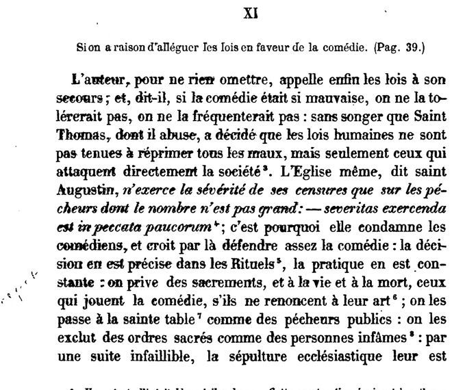

“La sépulture ecclésiastique leur est déniée” (§ XI)
French: Gazier’s edition, p. 46, scan; § XI, “Si on a raison d’alléguer les lois en faveur de la comédie” (“Whether it is right to appeal to the laws in favour of the theatre”). The last word, “déniée”, is on the next page. Highlighted: Lecky’s quotation.

The author, so as to leave nothing out, at last calls the laws to his aid: and, he says, if the theatre were so bad, it would not be tolerated, it would not be frequented; without considering that St. Thomas, whom he misuses, decided that human laws are not bound to repress every evil, but only those that directly attack society. The Church herself, says St. Augustine, exercises the severity of her censures only on sinners who are not many: “severity is to be used against the sins of the few”; that is why she condemns the actors, and thinks that in this way she sufficiently forbids the theatre: the ruling is precise in the Rituals, the practice is constant: those who act in plays are deprived of the sacraments, both in life and at death, unless they renounce their art; they are passed over at the holy table as public sinners; they are excluded from holy orders as infamous persons; and, as an infallible consequence, Christian burial is denied them.
Original French
L’auteur, pour ne rien omettre, appelle enfin les lois à son secours ; et, dit-il, si la comédie était si mauvaise, on ne la tolérerait pas, on ne la fréquenterait pas : sans songer que Saint Thomas, dont il abuse, a décidé que les lois humaines ne sont pas tenues à réprimer tous les maux, mais seulement ceux qui attaquent directement la société. L’Église même, dit saint Augustin, n’exerce la sévérité de ses censures que sur les pécheurs dont le nombre n’est pas grand : — severitas exercenda est in peccata paucorum ; c’est pourquoi elle condamne les comédiens, et croit par là défendre assez la comédie : la décision en est précise dans les Rituels, la pratique en est constante : on prive des sacrements, et à la vie et à la mort, ceux qui jouent la comédie, s’ils ne renoncent à leur art ; on les passe à la sainte table comme des pécheurs publics : on les exclut des ordres sacrés comme des personnes infâmes : par une suite infaillible, la sépulture ecclésiastique leur est déniée.
Gazier’s notes on the same page: “Rituel de Paris” (Bossuet’s source, which Lecky gives as “Rit. de Paris, pp. 108–114”); “In certain parishes, at Saint-Sulpice for example, a written renunciation was required of them”; and, on “on les passe à la sainte table”: “that is, they are passed by without being given communion.”
Backlinks
Every place in Rationalism in Europe that links to this page (generated automatically when the site is built).
- Chapter VI: note 142